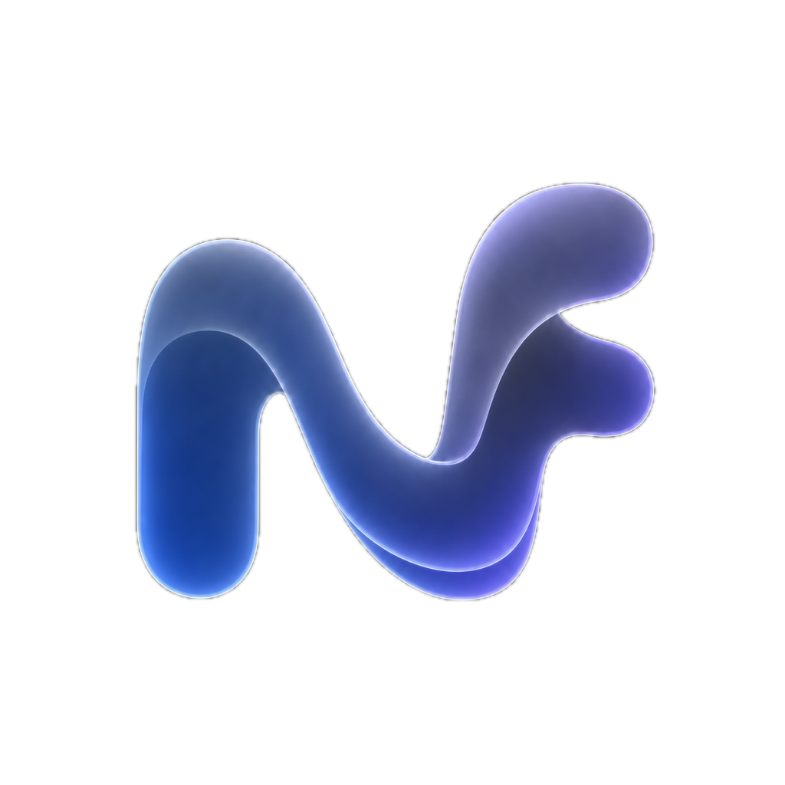

No account
No sign-up, and no NotchFlow server receiving what you type.

NotchFlow Back to NotchFlow →Legal
Effective date: 2026-11-22
NotchFlow is a direct-download macOS app. It has no account system and no server of its own, so your prompts never pass through a NotchFlow backend. This page explains what the app keeps on your Mac, what it sends and to whom, and how to remove it.
No sign-up, and no NotchFlow server receiving what you type.
History, notes, files and agent records are stored locally.
Prompts go straight to the provider, CLI or search service you set up.
API keys and your license are stored in the macOS Keychain.
No analytics, advertising or tracking code in the app.
NotchFlow never approves an agent's request on your behalf.
NotchFlow keeps what its local features need, in your user Application Support directory and the app's preferences:
Provider API keys, the trial start, your Lemon Squeezy license key and activation state, and an opaque per-install identifier are stored in the macOS Keychain. Keychain data can survive an app reinstall. NotchFlow does not collect a hardware fingerprint for licensing.
Some features read information on your Mac to show it in the notch. None of it is sent anywhere unless a row below says so.
So that approvals from Codex and Claude Code sessions started in Terminal can appear in the notch, NotchFlow adds its own entries to those CLIs' hook settings. It only adds; other tools' entries are left as they are.
~/.codex/hooks.json and the script ~/.codex/notchflow-codex-hook.py. Codex asks you to trust new hooks with /hooks before they run.PermissionRequest entry in ~/.claude/settings.json, and the script ~/.claude/notchflow/notchflow-hook.py. The first change keeps a copy of your original file as settings.notchflow-backup.json, and a settings file that cannot be read is never rewritten.The hooks pass the session ID, working folder, tool name and the command or file path in question to NotchFlow over a local socket on your Mac. Nothing goes over the network. When NotchFlow is closed or Agentic mode is off, the CLI asks in the terminal as usual. To stop this entirely, remove NotchFlow's entries from those files.
NotchFlow asks only for permissions needed by features you choose to use. They can include:
Some optional utilities may ask for others, such as Screen Recording, only when you turn them on. You can deny or revoke any permission in macOS System Settings; a feature that needs a denied permission will not be able to use it.
NotchFlow sends data over the network only to services you select, or that are needed for something you asked for. It does not proxy your content through a NotchFlow server.
| Service | What it receives | When |
|---|---|---|
| The AI provider or signed-in CLI you configure | Your prompt, the conversation context you include, and attachments you add | When you Ask, run an agent, or use a provider feature |
| A web-search service (Exa, Keenable, AnySearch) or your provider's built-in search | The search query | When an answer needs a web search you have set up |
| Open-Meteo | Your approximate location, rounded to about 1 km | When the Utilities tab shows weather and you allowed Location |
| GitHub | A request for the latest release, and the update download | When NotchFlow checks for or installs an update |
| Lemon Squeezy | Your license key, an activation email if you supply one, and an opaque install name | When you buy, activate, validate or deactivate a license |
| Apple apps and services | The note, reminder, calendar, camera or location request | When you use those features, under Apple's policies and your settings |
Each provider's own terms and privacy policy apply to what it receives. Lemon Squeezy, not NotchFlow, collects payment details. NotchFlow may also open links you choose, such as support, release notes or a provider sign-in page.
The seven-day trial starts on the first successful launch and is measured as seven 24-hour periods. When it expires, NotchFlow blocks product functionality until a valid paid license is activated. A valid paid license is perpetual and includes future NotchFlow updates. An already activated license may remain available while offline; validation is retried when a network connection is available so a refunded, disabled or deactivated license can be reflected.
Local history is kept until you delete individual items or use the app's Clear History controls; deleting history also removes its images. Removing a File tray item deletes any copy NotchFlow made of it. You can remove provider credentials in Settings and deactivate a licensed Mac in the License section of Settings → About.
Removing the app does not necessarily remove Keychain items, Application Support files, the CLI hook entries described above, content already saved to Apple Notes or Reminders, or data held by a provider, CLI, Apple app or Lemon Squeezy. To remove what remains, use the in-app deletion controls first, then move NotchFlow.app to the Trash and delete its Application Support folder, Keychain entries and hook entries if you no longer want them. Data held by another service must be deleted through that service.
For a privacy question or help with deletion, open a support request at github.com/sidhxntt/NotchFlow/issues. Do not post API keys, license keys, payment details or private prompt content in a public issue.
We will update this policy before a material change to the app's data practices. The effective date at the top identifies the current version, and releases include a note when a material privacy change occurs.